ViStaCoDe: Visual Satistics Coding and Denoising Toolbox
In contrast, this MATLAB toolbox for image coding and restoration is simultaneously based on the well established non-Gaussian nature of visual scenes and the well-known nonlinear behavior of visual cortex. This example of combined approach is sensible since these are two sides of the same issue in vision. Specifically, the core algorithms are (1) Divisive Normalization, a canonical computation in sensory neurons with interesting statistical effects, and (2) Sparse regression (in particular Support Vector Regression) that takes into account the statistical relations between image coefficients after linear transforms. In this report we illustrate the relations between the statistical features and the perception models that justify the qualitative equivalence of these techniques. The presented toolbox wraps these related statistical and perceptual factors and includes previous methods for comparison purposes.
This unified toolbox allows, for the first time, a fair comparison between the different factors in previous literature. As a consequence, the previous results can be seen from a new perspective: while the benefits of SVMs in local-frequency domains are confirmed in restoration, their relevance is scarce in coding once the perceptual normalization has been applied.
| 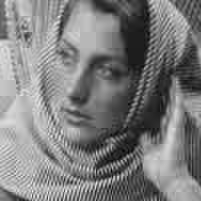 |
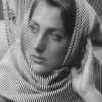 |
|
| JPEG-like
coding
[Wallace91] (CSF+uniform quantizer) |
[Malo95,
Malo99,
Malo00] (Simplified Masking) |
[Malo06] (General Masking) |
| [Robinson03]
(SVM+Simplified CSF) |
[Gómez05] (SVM+accurate CSF) |
[Camps08]
(General Masking+SVM) |
| 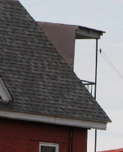 |
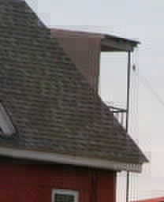 |
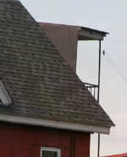 |
| Original
(24
bits/pix) |
JPEG | [Gutiérrez12] General Masking + SVM |
- JPEG-like coding: linear CSF + uniform quantizer.
- Non-uniform adaptive quantizer based on simplified masking models [Malo95, Malo99, Malo00].
- Non-uniform adaptive quantizer based on general masking models [Malo06].
- SVM DCT coefficient selection using simplified CSF [Robinson03].
- SVM DCT coefficient selection using accurate CSF [Gómez05].
- SVM coefficient selection in divisive normalized domain [Camps08].
- SVM coefficient selection in divisive normalized domain with accurate color contrast definition [Gutiérrez12].
| Gaussian Noise | Blur + Gaussian Noise | JPEG Noise | Salt and Pepper |
| 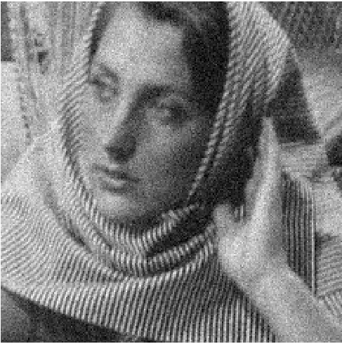 |
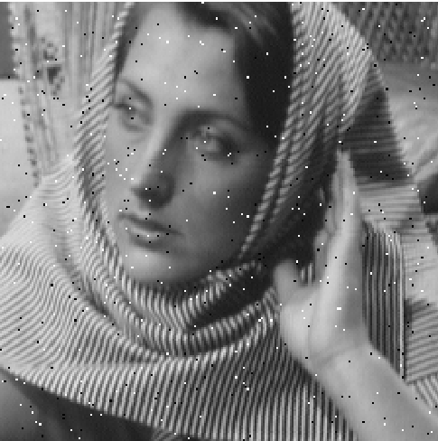 |
||
| PSNR=25
SSIM=0.83 SCIELab=0.72 DN=0.18 |
PSNR=24.6
SSIM=0.61 SCIELab=0.57 DN=0.19 |
PSNR=25
SSIM=0.72 SCIELab=1.22 DN=0.25 |
PSNR=25.3
SSIM=0.83 SCIELab=0.37 DN=0.19 |
Image Restoration schemes included in KeCode
- Wavelet and Kernel based denoising methods
- SVM regression with Mutual Information Kernels (includes relations among coefficients) [Laparra10]
- Hard Thresholding [Donoho95]
- Soft Thresholding [Donoho95]
- Bayesian approach assuming Gaussian marginal PDFs
[Figueiredo01]
- Regularization in local frequency domains
- Adaptive regularization functional based on perceptual divisive normalization (includes relations among coefficients) [Gutiérrez06]
- L2 regularization functional [Tychonov77].
- CSF-based regularization functional [Andrews77].
- Adaptive Auto-Regressive regularization functionals
[Banham97].
Regularization (denoising)
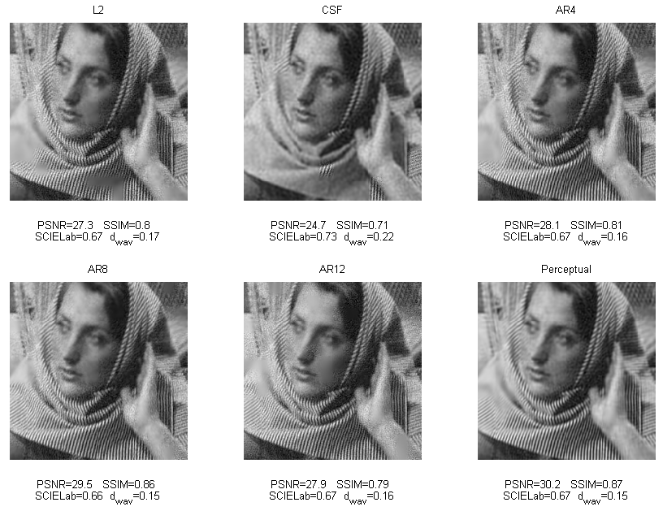
Regularization (deblurring+denoising)
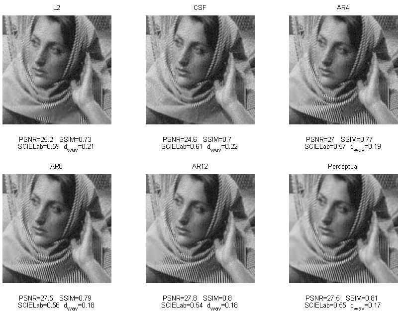
Regularization (removing JPEG noise)
Regularization (removing Salt and Pepper)

Wavelet and Kernel-based methods (Denoising)
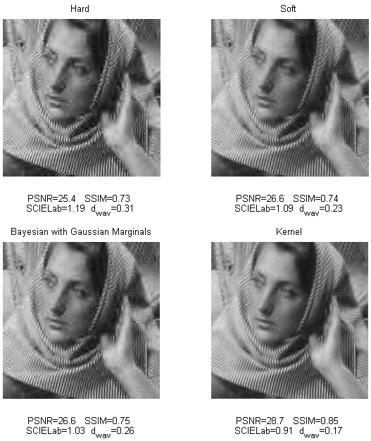
Wavelet and Kernel-based methods (Removing JPEG noise)
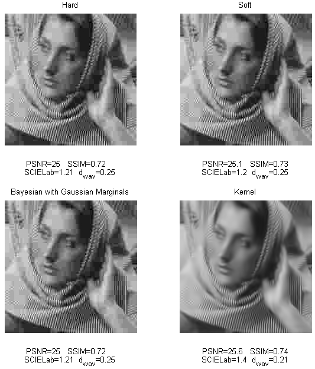
- [Malo06] J. Malo, I. Epifanio, R. Navarro, and E. Simoncelli. Non-linear image representation for efficient perceptual coding. IEEE Trans. Im. Proc., 15(1):68–80, 2006.
- [Gómez05] G. Gómez, G. Camps-Valls, J. Gutiérrez, and J. Malo. Perceptual adaptive insensitivity for support vector machine image coding. IEEE Transactions on Neural Networks, 16(6):1574–1581, 2005.
- [Camps08] G. Camps-Valls, J. Gutiérrez, G. Gómez, and J. Malo. On the suitable domain for SVM training in image coding. Journal of Machine Learning Research, 9:49–66, 2008.
- [Gutiérrez12] J.
Gutiérrez, M.J. Luque, G. Camps-Valls and J. Malo. A Color
Contrast Defnition for Perceptually based Color Image Coding. Recent
patents on Signal Processing. 2(1):33-55, 2012
- [Gutiérrez06] J. Gutiérrez, F. Ferri, and J. Malo. Regularization operators for natural images based on nonlinear perception models. IEEE Tr. Im. Proc., 15(1):189–200, 2006.
- [Laparra10] V. Laparra, J. Gutiérrez, G. Camps-Valls, and J. Malo. Image denoising with kernels based on natural image relations. Journal of Machine Learning Research, 11:873–903, 2010.
(c) 1995-2015 Valero Laparra, Juan Gutierrez, Irene Epifanio, Gabriel Gómez, Jordi Muñoz, Gustau Camps-Valls, and Jesus Malo {jordi.munoz, juan.gutierrez, valero.laparra, gustavo.camps, jesus.malo}@uv.es
All rights reserved.
Redistribution and use in source and binary forms, with or without modification, are permitted provided that the following conditions are met:
- Redistributions of source code must retain the above copyright notice, this list of conditions and the following disclaimer.
- Redistributions in binary form must reproduce the above copyright notice, this list of conditions and the following disclaimer in the documentation and/or other materials provided with the distribution.
THIS SOFTWARE IS PROVIDED BY THE COPYRIGHT HOLDERS AND CONTRIBUTORS "AS IS" AND ANY EXPRESS OR IMPLIED WARRANTIES, INCLUDING, BUT NOT LIMITED TO, THE IMPLIED WARRANTIES OF MERCHANTABILITY AND FITNESS FOR A PARTICULAR PURPOSE ARE DISCLAIMED. IN NO EVENT SHALL THE COPYRIGHT HOLDER OR CONTRIBUTORS BE LIABLE FOR ANY DIRECT, INDIRECT, INCIDENTAL, SPECIAL, EXEMPLARY, OR CONSEQUENTIAL DAMAGES (INCLUDING, BUT NOT LIMITED TO, PROCUREMENT OF SUBSTITUTE GOODS OR SERVICES; LOSS OF USE, DATA, OR PROFITS; OR BUSINESS INTERRUPTION) HOWEVER CAUSED AND ON ANY THEORY OF LIABILITY, WHETHER IN CONTRACT, STRICT LIABILITY, OR TORT (INCLUDING NEGLIGENCE OR OTHERWISE) ARISING IN ANY WAY OUT OF THE USE OF THIS SOFTWARE, EVEN IF ADVISED OF THE POSSIBILITY OF SUCH DAMAGE.